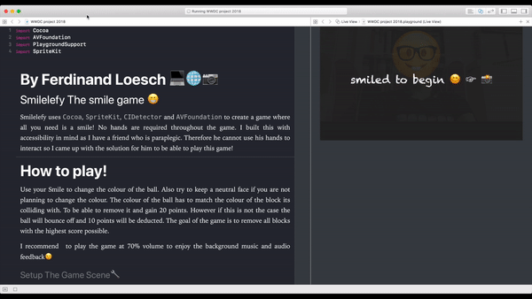

Hi, my name is Ferdinand, and I built the Swift playground. I primarily focus on accessibility for my project as I got a friend who has paraplegia he's always left out of plane most games. As he is paralyzed from the neck down, we tried playing games like Jetpack Joyride. However, he has to use his nose to be able to tap the screen while someone is holding the phone close to his face. How you can imagine this is not a particularly fun experience for him. Therefore I came up with the idea of using his smile to be able to interact with the game in this playground. First of all, I used AV foundation to capture a live video feed from the webcam on the laptop. I then used the pixel buffer from the frames captured. Which I then can pass into my core ML model which I made for a Uni project. This particular model detected several face expressions however that model was reasonably large with around 300 MB, and a bit overkill. Therefore I looked into other alternatives I discovered CIDetector its lightweight and can run in real time with the live camera video feed. Which made it perfect for my application, as the detector allows to classify If the user is smiling or if the user has the left or right eye closed. This was as easy to implement as my CoreML model. Furthermore, it had the added benefit of running much faster at around 20 classifications per second. Once I had the CI detector implemented I written a simple playground to test the different types of face inputs with my friend. It would play a sound once the CI detector has classified a smile or eyeblink. We quickly realized that the smile was the most intuitive and fun way to interact with the game. As it was the most reliable with the least false classifications and wasn't as quickly done by accident. This meant I had the input method sorted out, so I went on building a game using the SpriteKit framework which can be played with only a smile. The game is simple; a ball would randomly bounce around in the scene your task is to remove all bricks in the game you do this by adjusting the color of the ball by smiling to match the color of the block. I used the SpriteKit physics engine to let the ball bounce around the scene and also detect collisions between the ball and the blocks. I showed the game to my friend, and he loved it, so my mission was complete. So now he can play a game utterly independently without help from anyone.
Lange Straße 16
19071 Grambow
Germany
ferdinandloesch@me.com
DE Phone: (+49) 176 81976268
UK Phone: (+44) 7492 266341